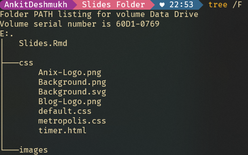

HTML slides with Xaringan.
Xaringan is an R package for creating slideshows with remark.js through R Markdown.
…from https://github.com/yihui/xaringan
The package name xaringan comes from Sharingan, a dōjutsu in Naruto with two abilities: the “Eye of Insight” and the “Eye of Hypnotism”. A presentation ninja should have these basic abilities, and I think remark.js may help you acquire these abilities, even if you are not a member of the Uchiha clan.
Installing Xaringan
Install the xaringan with CRAN or Github
install.packages('xaringan')
# or for latest version
remotes::install_github('yihui/xaringan')Setting up the xaringan slides
---
title: "Title of my presentation"
subtitle: "Your subtitle"
author: "**Dr. Ankit Deshmukh**"
institute: "Affiliation"
date: "Week #: `r format(Sys.time(), '%d %B %Y')`"
output:
xaringan::moon_reader:
css: ["css/default.css", "css/metropolis.css", "css/tachyons.min.css"]
self_contained: false
lib_dir: libs
nature:
highlightStyle: solarized-light
highlightLines: true
countIncrementalSlides: false
ratio: 16:9
---Global Setting for figures and code chunk
```{r setup, include=FALSE}
options(htmltools.dir.version = FALSE)
knitr::opts_chunk$set(
#out.width = "100%",
cache = FALSE,
echo = TRUE,
message = FALSE,
warning = FALSE,
fig.show = TRUE,
hiline = TRUE,
results= "asis" # Useful to show bibliography as normal text.
)
```Setting up for Bibliography and Citation
```{r setup, include=FALSE}
library(RefManageR)
library(bibtex)
BibOptions(check.entries = FALSE, bib.style = "authoryear", style = "text", first.inits = FALSE)
bib <- ReadBib("~/adx/Bibliography.bib") # A bibtex bibliography file. Use zotoro for this.
```Use xaringanExtra to enhance slide feature
use_logofor adding the logo in your slide.use_progress_barfor progress bar.use_extra_stylesfor code hover effect.use_xaringan_extra("tile_view")for see the preview of slides a once, it helps to jump on slides.use_xaringan_extra("tachyons")for an awesome miniature css with your slides. Find more here https://tachyons.io/#features
```{r, echo=FALSE, include=TRUE}
library(xaringanExtra)
use_logo(image_url = "./css/Anix-Logo.png", link_url = "https://www.ankitdeshmukh.com/", width = "60px", height = "60px")
use_progress_bar(color = "#28282888",location = "top", height = "0.25em")
use_extra_styles(hover_code_line = TRUE, mute_unhighlighted_code = FALSE)
use_xaringan_extra(c("tile_view", "tachyons", "use_logo", "use_progress_bar"))
```Organize all the image in images folder

use knitr of html+tachyons to add image
```{r, include=TRUE, echo=FALSE, fig.align='center', out.width="60%"}
knitr::include_graphics("images/YourImage.xyz", error = FALSE)
```
or use html tags
<img src="images/YourImage.xyz" class="w-60 br4 dib center">